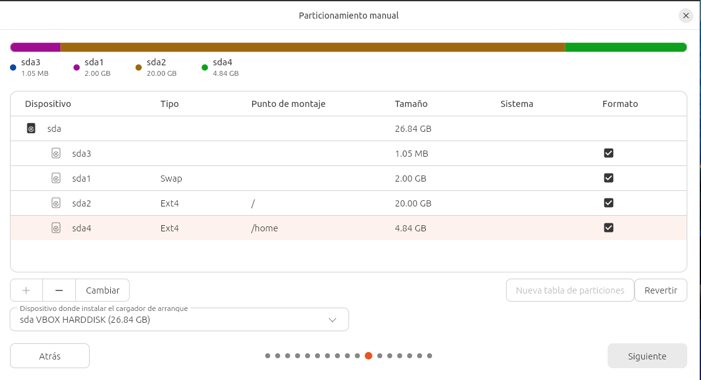

1. Instal·lació del sistema operatiu
Primer he creat una maquina virtual amb xarxa nat, 4 GB de RAM i 25 GB de disc. Un cop arrencat
el suport d'instal·lació, cal seguir l'assistent i triar les opcions de
particionat abans de continuar.
Passos per instal·lar el sistema operatiu:
- Arrencar des del USB o la imatge ISO.
- Triar l'idioma i la distribució de teclat.
- Configurar el particionat del disc.
- Esperar que finalitzi la còpia d'arxius i reiniciar.

En aquest cas li he assignat 20 GB a l'arrel del sistema "/", 2 GB com a SWAP i el restant per a la /home.
Un cop reiniciat el sistema, el sistema arrenca correctament i reconeix tot el maquinari.
↑ Tornar a l'índex
2. Configuració de xarxa bàsica
Al tenir la maquina virutal amb NAT, la configuració de xarxa és automàtica
i ja dona conexió a internet. La configuració de xarxa és
imprescindible per poder actualitzar el sistema i
instal·lar programari nou.
- Comprovar l'adreça IP assignada amb
ip a.
- Configurar una IP estàtica si el servei ho requereix.
- Verificar la connectivitat amb
ping.


És automatica ja que la xarxa NAT te un servei de DHCP integrat, per lo qual no cal configurar
manualment les adreces IP. Si tinguesem la interficie en mode pont, hauríem de configurar manualment
les adreces IP si la xarxa no tingues un servei de DHCP.
↑ Tornar a l'índex
3. Creació d'usuaris i grups
At vero eos et accusamus et iusto odio dignissimos ducimus qui
blanditiis praesentium voluptatum deleniti atque corrupti. Cada
usuari nou s'hauria d'assignar al grup mínim necessari
segons les tasques que ha de fer.

- Crear l'usuari amb
useradd.
- Assignar contrasenya amb
passwd.
- Afegir l'usuari als grups necessaris amb
usermod -aG.
↑ Tornar a l'índex
4. Comprovació final
Et harum quidem rerum facilis est et expedita distinctio. Nam libero
tempore, cum soluta nobis est eligendi optio cumque nihil impedit.
Abans de donar per acabat el sprint, revisa aquest resum:
- El sistema arrenca sense errors.
- La xarxa respon correctament als pings.
- Els usuaris i grups creats coincideixen amb l'enunciat.
Nemo enim ipsam voluptatem quia voluptas sit aspernatur aut odit aut
fugit, sed quia consequuntur magni dolores eos qui ratione voluptatem
sequi nesciunt.
↑ Tornar a l'índex